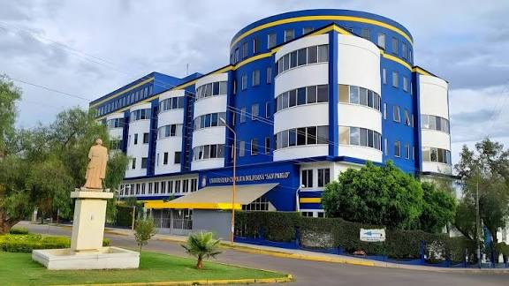

Sobre Mí
¡Hola! Soy Celeste, estudiante de Ingeniería de Sistemas y Técnica Media en Programación. Me apasiona el desarrollo de software, la lógica algorítmica y la creación de interfaces de usuario.
¡Hola! Soy Celeste, estudiante de Ingeniería de Sistemas y Técnica Media en Programación. Me apasiona el desarrollo de software, la lógica algorítmica y la creación de interfaces de usuario.


Curso la carrera de Ingeniería de Sistemas en la Universidad Católica Boliviana "San Pablo", enfocada en desarrollo y tecnologías web.
Cuento con formación técnica base en programación, lo que fortaleció mis cimientos lógicos y metodologías de desarrollo.
Me desempeño como ayudante en la materia de Programación 1, guiando a los estudiantes en la lógica de programación y C++.